Sada je potrebno da generišemo ključeve za našu mejl adresu.
To možemo uraditi i iz terminala koristeći GPG, ali je za početnike bolje da to urade
kroz Thunderbird-ov dodatak Enigmail.
Figure 7: Da bi instalirali Enigmail potrebo je da u Thunderbird-u izaberete
opciju za dodatke (eng. Add-ons).
Figure 8: U polju za pretragu dodataka unesite "Enigmail".
Figure 9: Instalirajte najnoviju verziju Enigmail-a i restartujte Thunderbird.
5. Kreiranje ključeva kroz Enigmail
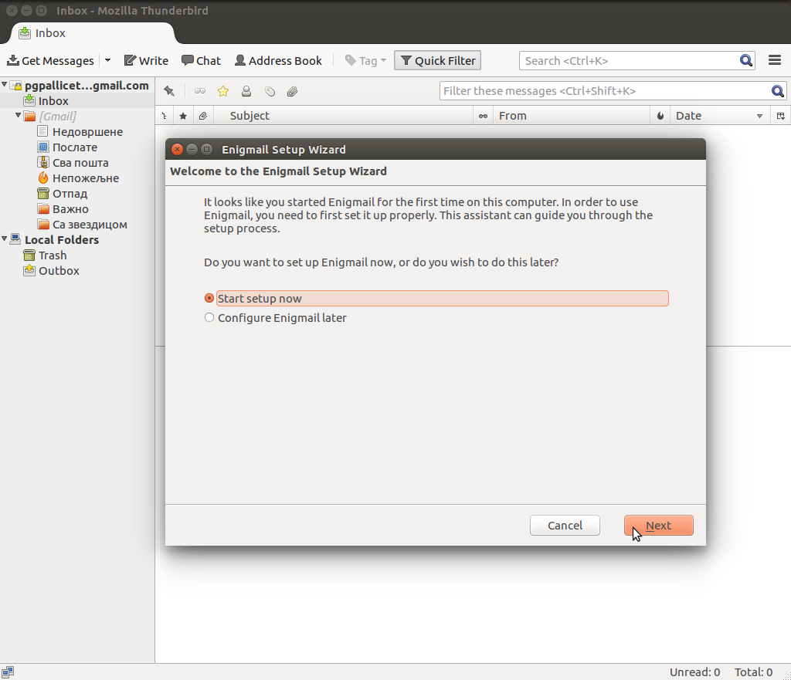
Figure 10: Kada se Enigmail restartuje, automatski će se pokrenuti čarobnjak
(eng. Wizard). Ukoliko se sam ne pokrene možete ga i ručno pokrenuti
iz Opcije "Enigmail">"Setup Wizard"
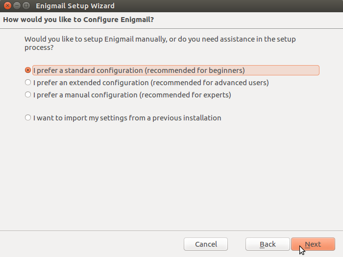
Figure 11: Najbolje je izabratni standardni način konfiguracije prilagođen
početnicima.
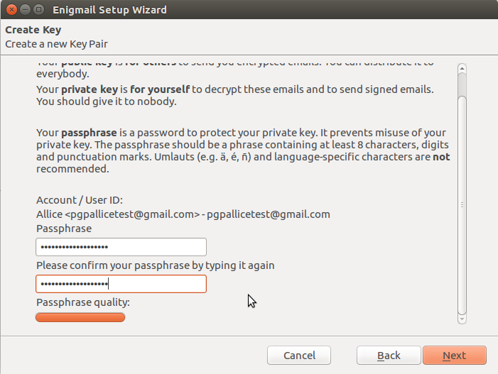
Figure 12: Pitaće vas za šifru kojom će te pristupati tajnom kljuˇvu za vašu
mejl adresu. Ukoliko imate više ličnih mejl adresa u Thunderbird-u, odaberite
za koju kreirate ključeve.
Šifra za tajni (negde se zove i privatni) ključ je samo još jedan sigurnosni mehanizam
namenjen da samo pravoj osobi odobri upotrebu najkritičnijih upotreba tajnog ključa kao
što su digitalno potpisivanje i dešifrovanje pristigle pošte.
Šifra je takođe od velike važnosti jer u slučaju da izgubite tajni ključ, a ukoliko
je šifra bila dovoljno jaka, niko ko dođe u posed vašegg tajnog ključa neće moći da
ga upotrebi bez znanja vaše tajne šifre.
Mi smo u našem primeru odabrali dosta dugačku šifru od 19 karaktera što nikako nije
preterivanje ukoliko predhodno nemate iskusva u sigurnom skladištenju i prenosu tajnih
GPG ključeva.
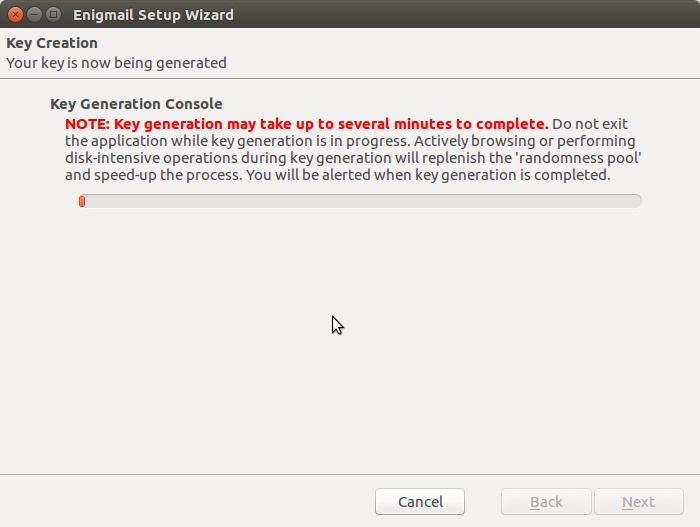
Figure 13: Pošto unesete sigurnu šifru, počeće proces generisanja ključa
kome je potrebno dosta entropije. Kako bi ste obezbedili entropiju i ubrzali
proces, aktivno pretražujte internet, mrdajte miša, kuckajte po tastaturi, ...
Proces pože potrajati, pa je važno imati strpljenje i ne prekidati program.
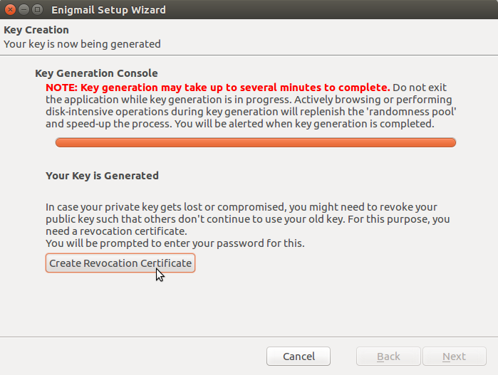
Figure 14: Kada se proces završi ponudiće vam da sačuvate sertifikat za
opoziv ključa. To obavezno prihvatite i sačuvajte sertifikat.
Sertifikat za opoziv (eng. Revocation Certificate) se koristi u slučaju da izgubite
tajni ključ ili da ne možete da se setite šifre za pristup tajnom ključu
U tom slučaju Enigmail ili GPG programu prosleđujete ovaj sertifikat koji na server
javnih ključeva (eng. Public Key Server) šalje informaciju o opozivu
ključa i nevalidnosti istog za dalju upotrebu.
Ta informacija je od značaja svima koji žele da šifrovane poruke šalju vama da ne
koriste opozvani ključ jer nećete moći da ih dešifrujete.
Ukoliko vam program ne ponudi da sačuvate sertifikat za opoziv, to možete i
naknadno uraditi iz programa.
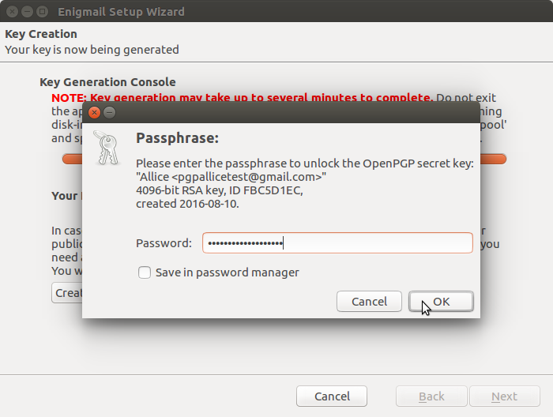
Figure 15: Pitaće vas za šifru kojom pristupate vašem tajnom GPG ključu.
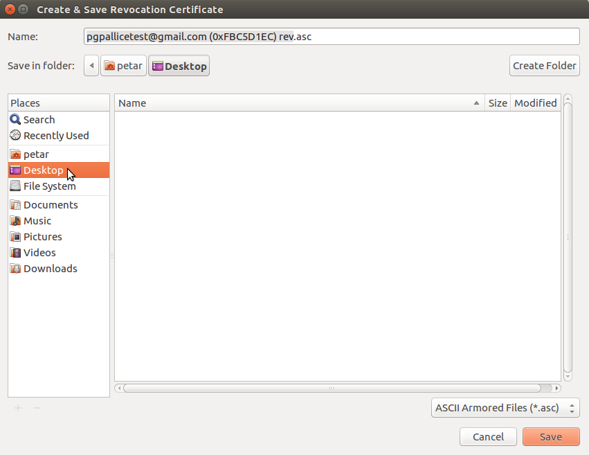
Figure 16: Sačuvajte sertifikat za opiziv.
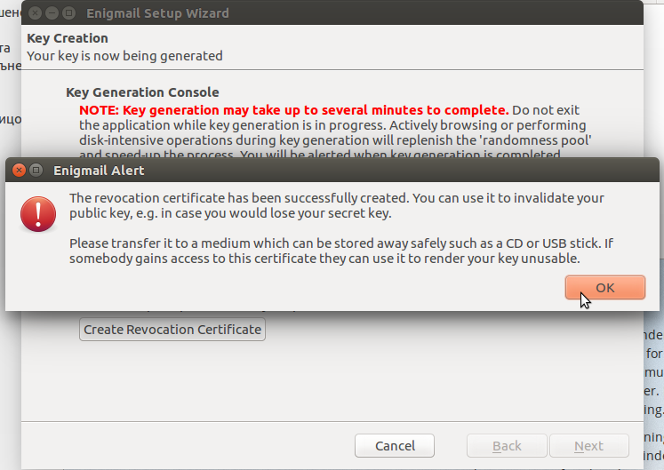
Figure 17: Sačuvajte sertifikat i na nekom spoljnom medijumu kako bi ste
imali rezervnu kopiju.
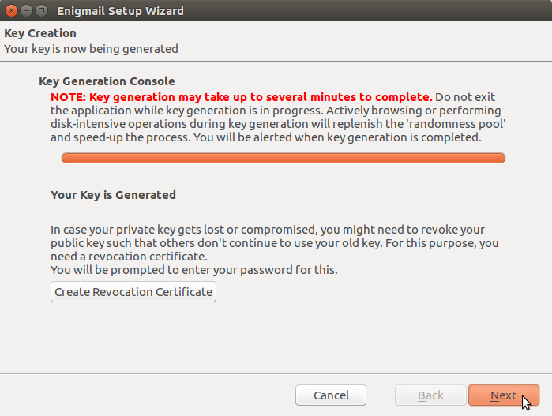
Figure 18: Završilismosagenerisanjemključeva i sertifikata.
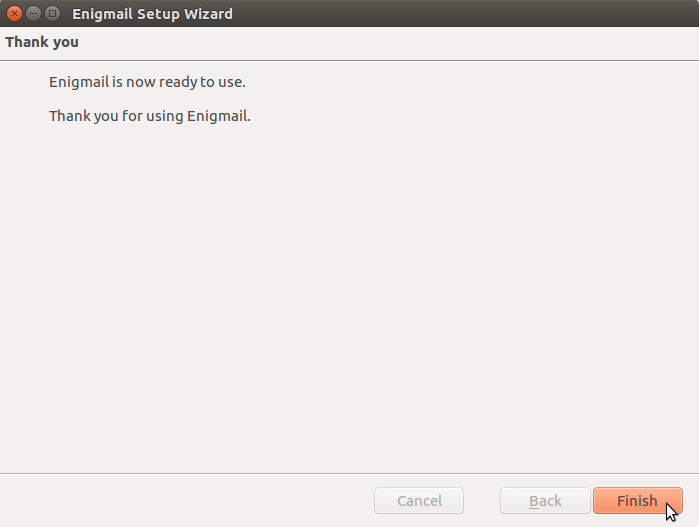
Figure 19: Kraj.
6. Objavljivanje vašeg javnog ključa
Sada kada ste napravili vaš GPG par ključeva, potrebno ja da objavite vaš
javni ključ na nekom od servera javnih ključeva.
Kako bi svako ko zna vašu mejl adresu mogao da proveri na serveru javnih
ključeva GPG ključ koji odgovara vašoj mejl adresi i koristi ga kako bi
vam poslao šifrovanu poštu.
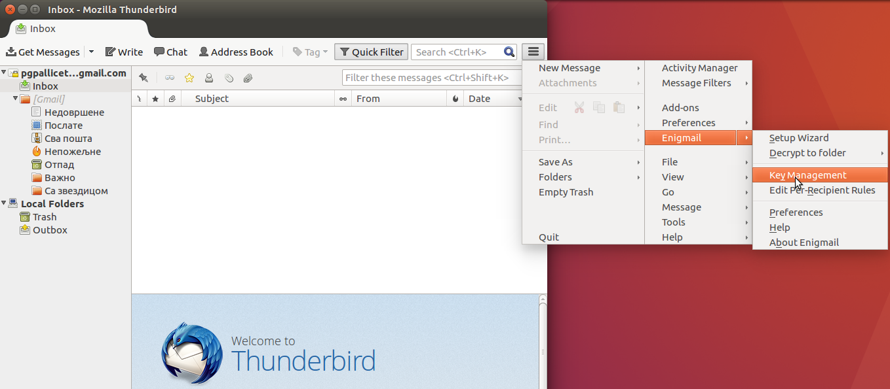
Figure 20: Kako bi otpremili naš javni ključ, treba da odemo u
"Enigmail > Key Management".
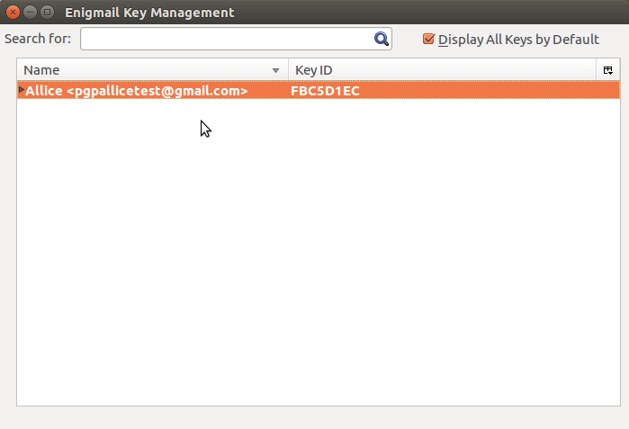
Figure 21: Menadžer ključeva u Enigmail-u.
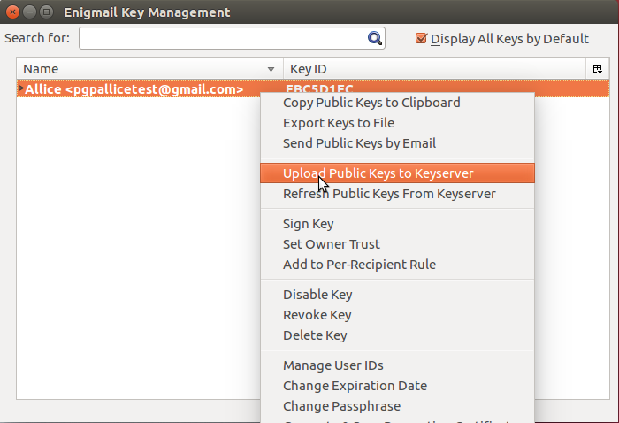
Figure 22: Desni klik na ključ i odaberete opciju "Upload Public
keys to Keyserver".
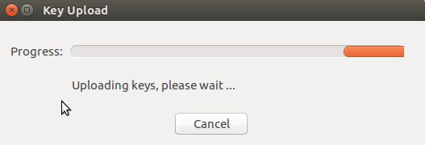
Figure 23: Sačekajte da se ključ pošalje.
6.1. Saznajte na koji server ste poslali ključ:
Sada se vaš javni ključ nalazi na nekom od servera na koji ste ga poslali.
Kako bi saznali adresu servera na koji je vaš ključ poslat možete videti
otić u "Enigmail > "Preferences".
Onda u "Basic" tabu kliknuti na "Display ExpertSettings and Menus",
i zatim otići u "Keyserver" tab.
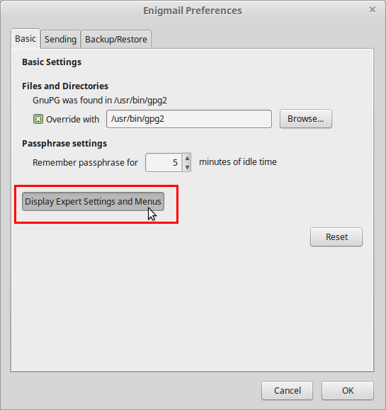
Figure 24: "Display Expert Settings and Menus"
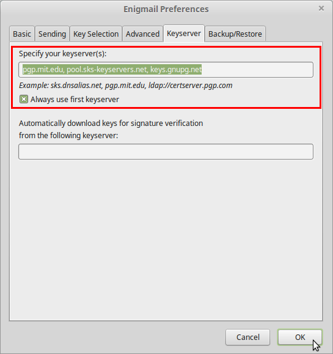
Figure 25: U "Keyserver" tabu su najverovatnije podešeni serveri:
pool.sks-keyservers.net, keys.gnupg.net, pgp.mit.edu.
6.2. Proverite gde je kluč iz internet pretraživača
Da bi ste se uverili da je ključ poslat i da se zaista nalazi na pomenutim
serverima, možete iz vašeg internet pretraživača posetiti stranice pgp.mit.edu
ili sks-keyservers.net i u polja za pretragu uneti vašu mejl adresu za koju ste
upavo generisali ključeve.
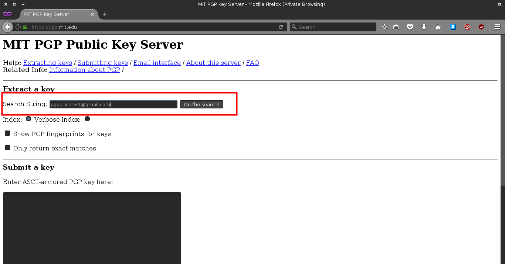
Figure 26: Pretraga pgp.mit.edu servera javnih ključeva.
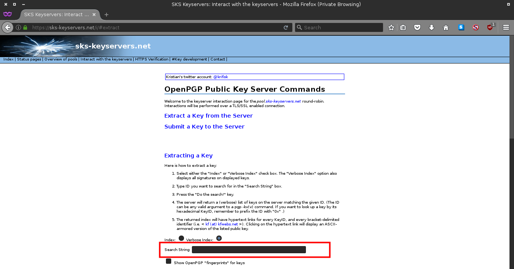
Figure 27: retraga sks-keyservers.net servera javnih ključeva.
7. Razmena šifrovanih poruka
7.1. Razmena šifrovanih poruka
Da bi ste poslali nekome šifrovanu poruku morate imati njegov javni ključ.
Kako bi ste nabavili nečiji javniključ, trebate otići ponovo
u "Enigmail > Key Management", pa kliknite na "Keyserver > Search for Keys",
i zatim unesite mejl adresu osobe kojoj želite poslati šifrovanu elektronsku poruštu.
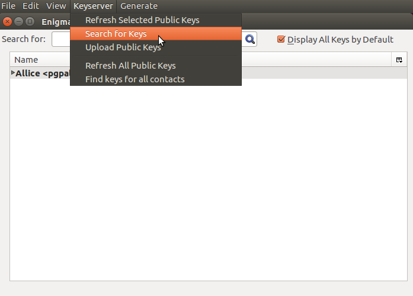
Figure 28: "Enigmail > Key Management" > "Keyserver > Search for Keys".
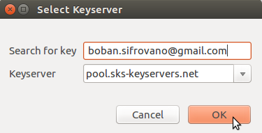
Figure 29: Unesite mejl adresu osobe kojoj želite poslati šifrovanu
elektronsku poruštu..
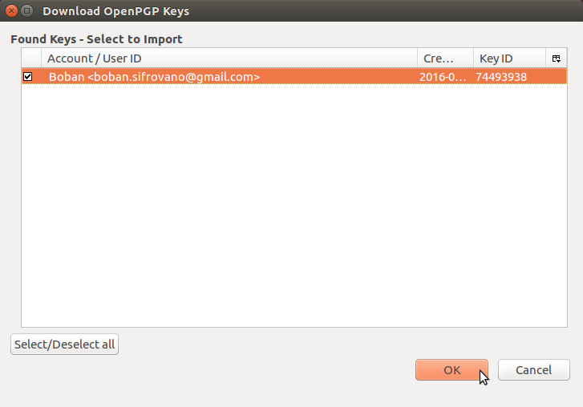
Figure 30: Ako na serveru postoji željeni ključ jednostavno ga označite i
uvezite u Enigmail.
Ukoliko željeni ključ ne postoji to može biti ili zato što nije napravljen
i/ili poslat na server, ili je ključ napravljen i poslat na neki server,
samo se nije sinhronizovao sa serverom na kojem ga vi tražite.
U tom slučaju treba sačekati nekoliko minuta da bi se ključ našao na svim
javnim serverima javnih GPG ključeva.
Takođe se može desiti da pretraživanjem za unetu adresu kontakta dobijete
više ponuđenih GPG ključeva.
U tom slučaju se treba obratiti kontaktu za informaciju o aktuelnom važećem ključu.
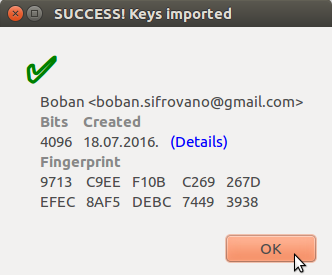
Figure 31: Po preuzimanju željenog javnog ključa biće prikazana
poruka o uspešnom preuzimanju kao i jedinstveni otisak
(eng. Fingerprint) preuzetog ključa.
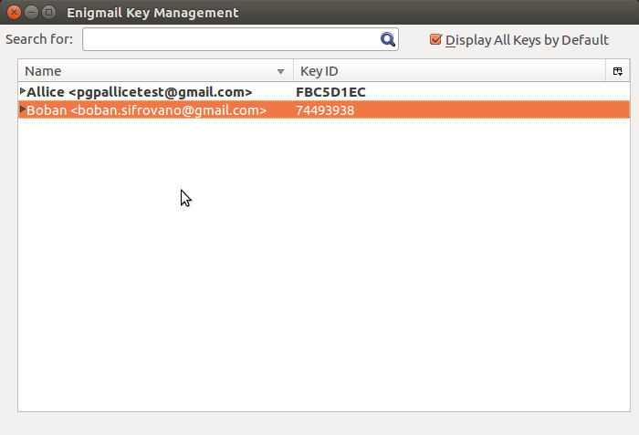
Figure 32: Po preuzimanju ključa vašeg kontakta, njegov ključ će se
takođe pojaviti u vašoj lokalnoj bazi GPG ključeva unutar Enigmail-a.
7.2. Slanje šifrovanih mejlova
Sada kada imate vaš par GPG ključeva, kao i javni ključ kontakta kome želite
poslati privatnu šifrovanu poruku, sve što treba da radite jeste da sastavite
poruku i unesete mejl adresu kontakta čiji javni GPG ključ imate
Nakon sastavljanja poruke štiklirajte ikoniće ključa i olovke kako bi ste
sastavljenu poruku šifrovali i digitalno potpisali pre nego što je pošaljete.
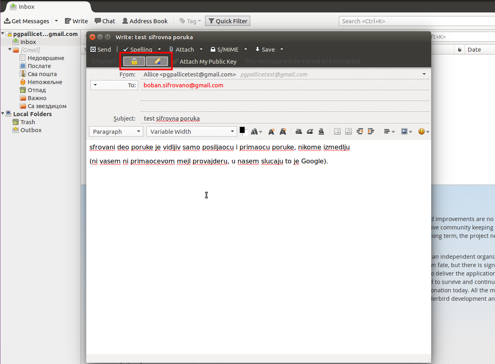
Figure 33: Štiklirajte ikoniće ključa i olovke
7.2. Primanje šifrovanih mejlova
Predpostavljajući da već imate javni kljuć pošiljaoca, primljenu šifrovanu
poruku Enigmail će prepoznati i ponuditi daje dešifrujete.
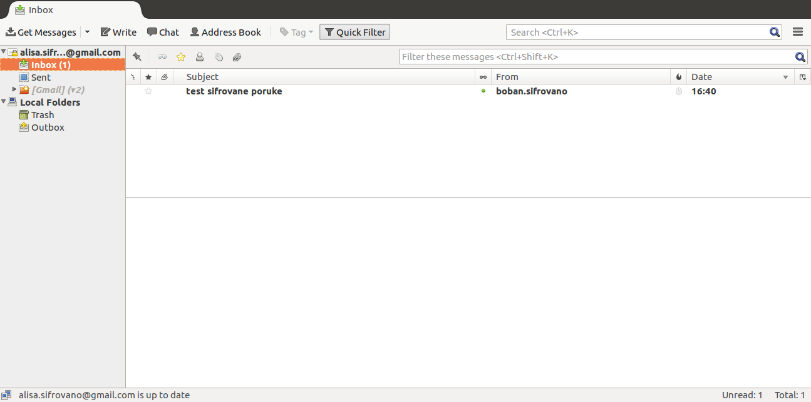
Figure 34: Pristigla šifrovana poruka.
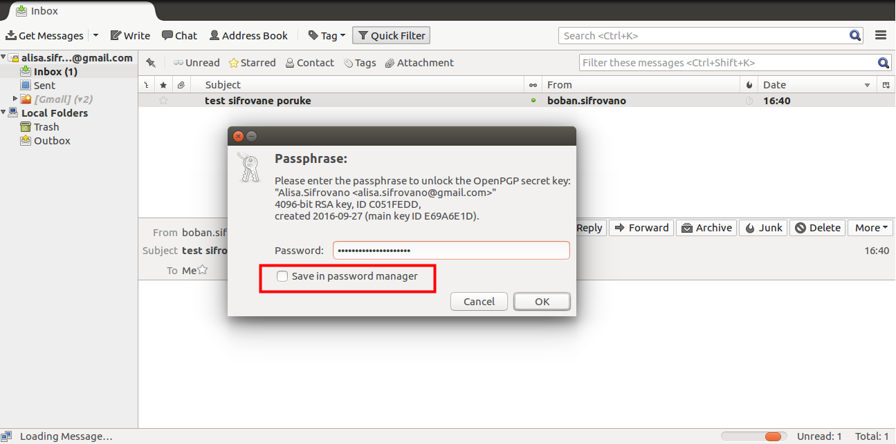
Figure 35: Kada kliknete na primljenu poruku, pojaviće se prozor
za unos šifre za pristup vašemtajnom ključu kako biste dešifrovali
primljenu poruku. Unesite vašu GPG šifru.
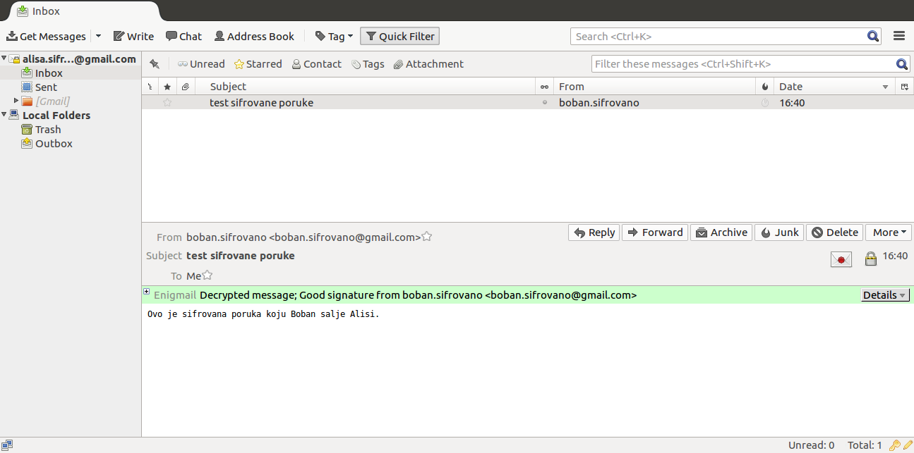
Figure 36: Dešifrovana poruka.